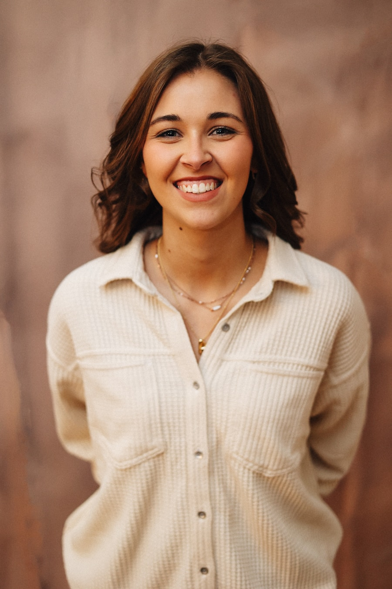

![CB Odontología y Estética]()
Fase ⑧ · Pieza 10 · 768 px
Es la única pantalla que el brief trae dibujada —la pág. 17, de escritorio—. Acá está pasada a móvil, con los textos definitivos de la § 4 y con el encabezado de la pieza 9 arriba, que es como se va a ver.
La propuesta · el texto sobre la foto, a 1:1

Lo que esta pieza entrega además del dibujo
🔴 La forma elegida DICTA la foto, y eso es el entregable. Con el texto encima, el velo tapa el tercio de abajo: si la cara está centrada, la sonrisa queda debajo del velo — que es exactamente lo que pasa con la foto de ejemplo, que es un primer plano apaisado del brief. La foto del hero se pide VERTICAL, 2:3 o más alta, con la cara en el TERCIO DE ARRIBA y aire abajo para que el velo tenga dónde caer.
object-position: 50% 52%.⚠️ La foto de arriba es de
ejemplo. Vive en brand/fotos/, con su autor y su licencia
escritos al lado. No es la foto del sitio, y hay un motivo que no es
de gusto: la persona es identificable, y la licencia de la foto no es el
permiso de esa persona. Para publicidad sanitaria hace falta autorización
de imagen.
Las reglas